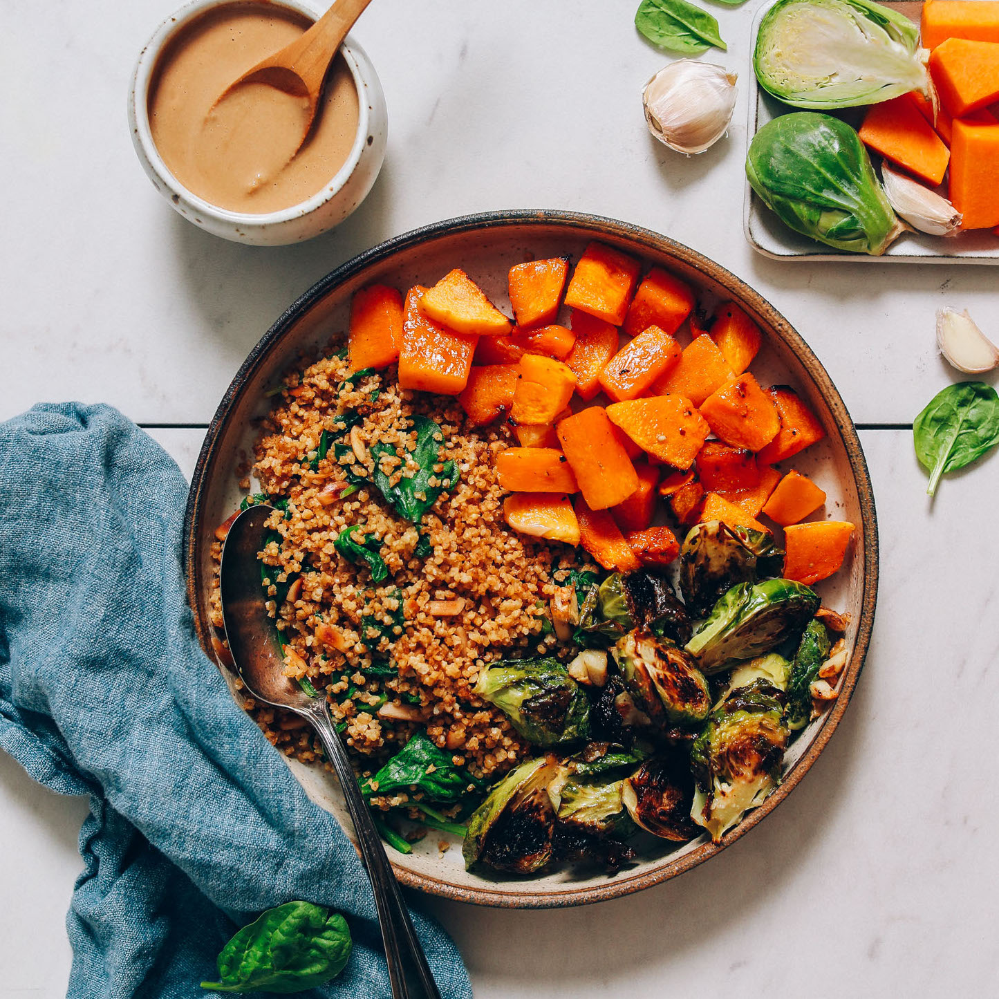

Nourish Bowls

Butternut Squash and Miso Brussels Sprouts Nourish Bowl
These nourish bowls from Minimalist Baker provide a quick and healthy meal full of whole grains, vegetables, leafy greens, and cruciferous veggies!
Ingredients
- 2 cups of grains
- 2 Tbsp slivered almonds
- 1 Tbsp soysauce
- 2 cups baby spinach
- 1 bag steamed butternut aquash
- 2.5 cups brussel sprouts
- 1 tsp avocado oil
- 1 pinch sea salt and pepper
- 3 medium garlic cloves
- 1.5 tsp miso paste
- 1 Tbsp rice vinegar
- 1.5 tsp maple syrup
- 2 Tbsp tahini
- 1-2 tsp maple syrup
- 2 cloves garlic
- 2 Tbsp water
- 2 Tbsp soysauce
Steps
- Heat oven to 400 degrees F and line a baking sheet with parchment paper.
- Grains: If you haven't prepared your grains, do so now.
- Butternut Squash: Follow microwave instructions on package.
- Miso-Glazed Brussel Sprouts:Add trimmed and halved brussel sprouts to a medium mixing bowl and season with oil, salt, and pepper. Toss to coat and set aside.
- In a separate small mixing bowl, add the miso glaze ingredients and stir to combine. Taste and adust flavor as needed, adding more miso for saltiness, vinegar for acidity, or maple syrup for sweetness. It should be equal parts tangy, salty, and sweet. Set aside for use after the brussel sprots are roasted.
- Heat a large oven-safe skillet over medium-high heat. Once hot, add oil.
- Then add brussel sprots. Make sure pan is not crowded.
- Coof for 2-3 minutes cut side down to get a sear. Add garlic to the pan, toss, and transfer to the oven. Bake for 10-15 minutes at 400 degrees F, removing from the oven every 5 minutes to toss and inspect the sprouts. Remove from the oven and immediately add the miso glaze and toss. Set aside.
- Tahini Sauce: To a small blender add tagini, maple syrup, garlic, water, and soysauce and blend until creamy and smooth.
- To serve, divide the grains and greens between serving bowls and top with butternut squash and miso-glazed brussel sprouts. Serve with tahini sauce.